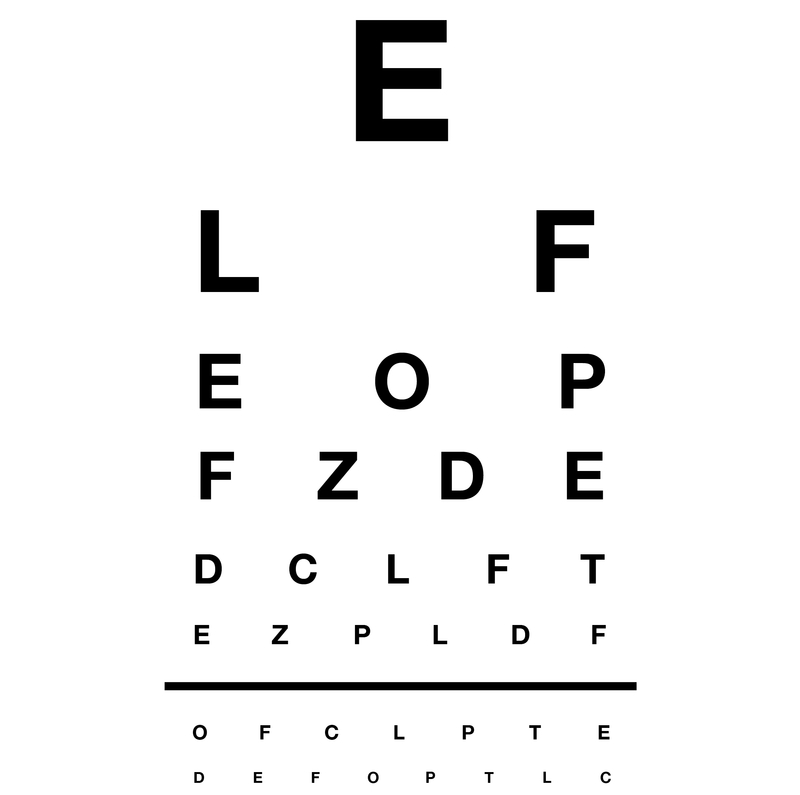

This test evaluates your distance vision using a Snellen chart, the standard tool used by eye care professionals worldwide.
After viewing the chart in fullscreen, enter the letters you saw for each row, separating rows with commas.
Example: "E, FP, TOZ, LPED" for the first four rows
If you couldn't read a row, simply skip it in your response.
For accurate results, you must be positioned exactly 10 feet (3 meters) from your screen. This standardized distance ensures the test functions correctly and provides meaningful results.
Click the preview image below to view the Snellen chart in fullscreen mode:

This test is for preliminary screening purposes only. It does not replace a professional eye examination. If you suspect you have vision problems, please consult with an optometrist or ophthalmologist for a comprehensive eye exam.